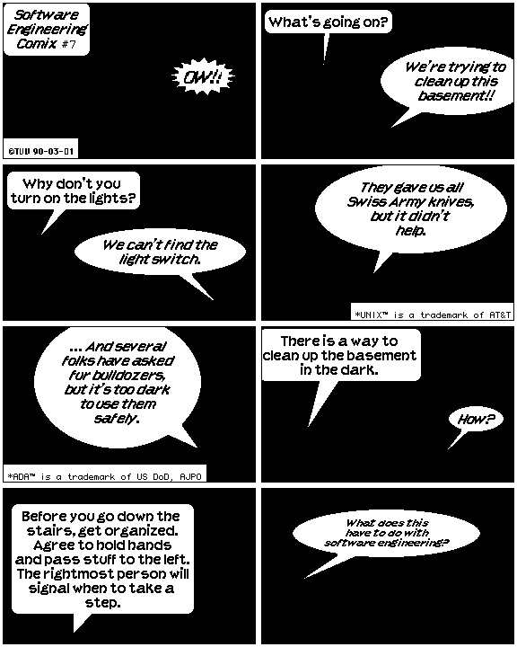

1992-04-02
Developing software reminds me of trying to clean up the basement in the dark. We crash around, running into each other and into unidentified obstacles, grunting and swearing. I encounter something and decide to move it; as soon as I set it down someone else finds it and moves it elsewhere. Adding more people to a process like this probably won't help.
Suppose somebody tells us what we need is better tools. Should we hand out Swiss Army Knives to everybody? Well, they're irrelevant or worse. A bulldozer would be great for cleaning up, but I wouldn't give everybody bulldozers either, as long as we are operating in the dark.
I want a theory of how to develop software. That would be like turning on the lights. But the light switch for this software development basement is probably upstairs somewhere; the kind of theory we need won't be found while we are trying to get releases out.
If I were trying to clean up the basement in the dark, I'd organize the team before we went down the stairs. I'd have us all form a chain across the basement and hold hands, and pass things to the left as we found them, and so on. In other words, organization and cooperation are more valuable to this kind of process than individual productivity.
What can we do while we wait for a theory of software development?
Think first. This is the idea behind all successful software engineering methods.
Proceed as systematically as possible, without making that an end in itself.
Write designs down; write clearly; don't write too much.
Discover, document, and keep improving a systematic collection of development practices.
Build tools, use them, keep improving them.
Describe the architecture. Find organizing concepts and abstractions that describe what we are building and guide us in design choices.
Port designs, not code.
Check everything. Use the whole team to review plans, designs, and source programs.
Discuss, review and publish a brief planning memo before starting work for every change, even one-line fixes.
Evolve both products and development processes.
Incrementally integrate changes into systems with live users in small steps to ensure exposure and side effect detection.
Choose flexibility and common sense over bureacracy and rules.

ACM Software Engineering Notes, April 1992.